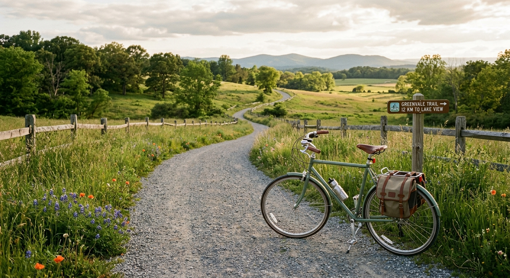

- Découverte et évasion à son propre rythme : Le vélo de loisir permet d'explorer des paysages naturels et des sentiers méconnus sans la contrainte du temps, offrant un sentiment de liberté totale.
- Bien-être physique et mental : C'est une activité physique douce mais efficace qui permet de se vider l'esprit, de réduire le stress et de profiter de l'air frais en pleine nature.
- Accessibilité et convivialité : Accessible à tous les niveaux de pratique, le vélo de loisir se partage facilement en famille ou entre amis, favorisant des moments de partage et de convivialité.